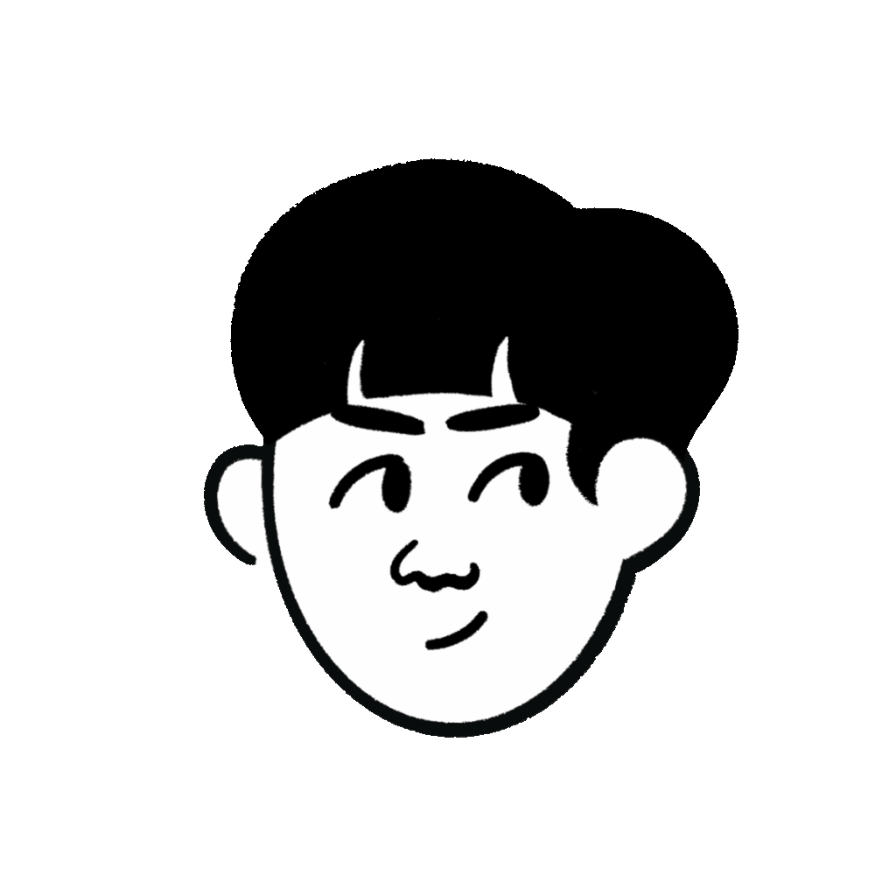

Hello, I'm Sorren!
I'm a Full-stack developer
with a background in UX design
and human-computer interaction.

Scroll down
to see what I've been
working on!
Scroll down
to see what I've been
working on!